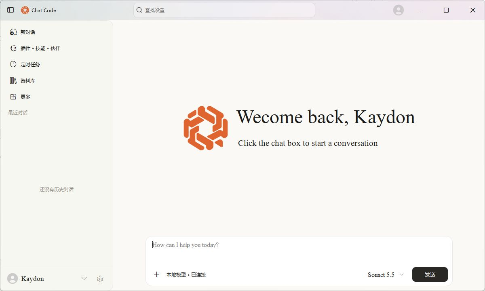

多轮对话
把前文一起交给模型，持续追问、补充条件，沿着同一条思路深入。
PROJECT 02 · YOUR LOCAL COMPANION
让灵感接着聊，让工作有条理。从多轮对话到会话整理，从一键复制到细腻的桌面材质，Chat Code 把本地 AI 做成一个顺手的日常伙伴。

01 / CONTEXT THAT STAYS
每次提问都会携带当前会话中的前文，让追问、补充与修改自然衔接。不同会话分别维护上下文，切换话题时，思路仍各自清晰。
02 / MADE FOR EVERYDAY
把常用的动作放在触手可及的位置：重要话题置顶，回复一键带走，界面随内容舒展。减少操作，让注意力回到问题本身。
把前文一起交给模型，持续追问、补充条件，沿着同一条思路深入。
置顶重要对话，自定义名称；最近更新的会话自动前排，查找更直观。
一键复制整条消息，即时反馈复制状态；每条消息保留清晰的时间标记。
启动应用后自动加载本地模型，加载、连接与生成状态实时可见。
03 / DESIGNED TO FEEL NATIVE
Mica 材质从桌面壁纸取色，融合柔化、染色与微粒纹理，让标题栏自然融入你的桌面。自定义窗口保留拖动、缩放与最大化交互，200 毫秒侧栏动画，让专注与浏览轻巧切换。
04 / INTELLIGENCE, LOCALLY
桌面应用自动管理本地模型服务，从启动、健康检查到退出清理，形成完整生命周期。模型路径、上下文与生成参数可通过配置文件调整，让使用方式贴合自己的设备。
05 / UNDER THE SURFACE
当前构建采用 Qwen2.5 3B 量化模型，并提供 GPU 加速配置。从上下文长度到采样参数，把适合自己的对话体验留给自己定义。
Q4_K_M 量化模型
当前上下文长度
全 GPU 层加载配置
单次最大生成 Token
06 / KEEP EXPLORING
从本地对话出发，持续探索更自然的桌面 AI 体验。
返回首页 ↗